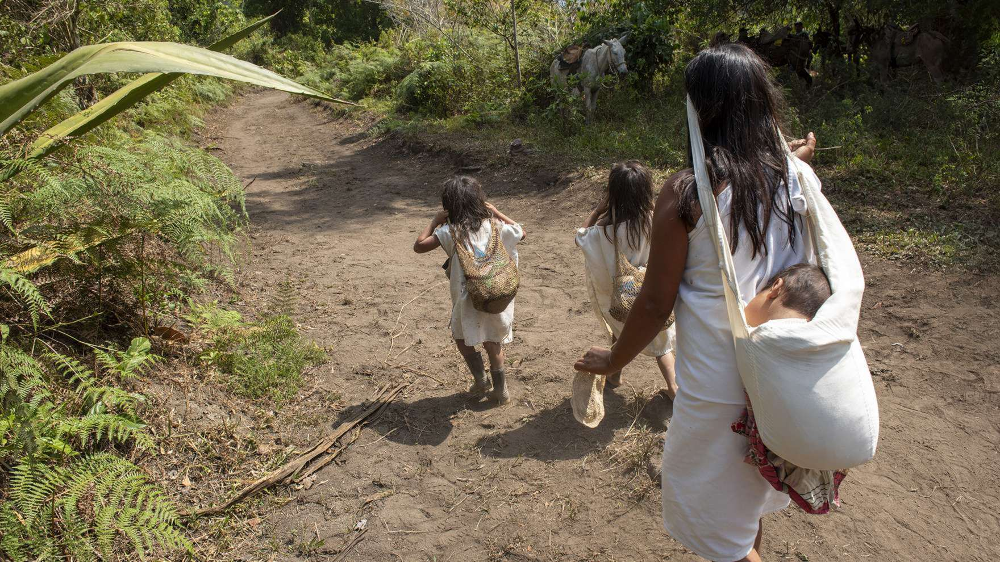
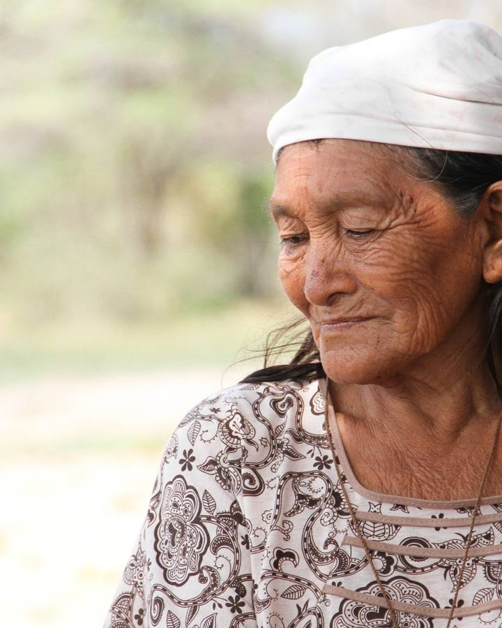
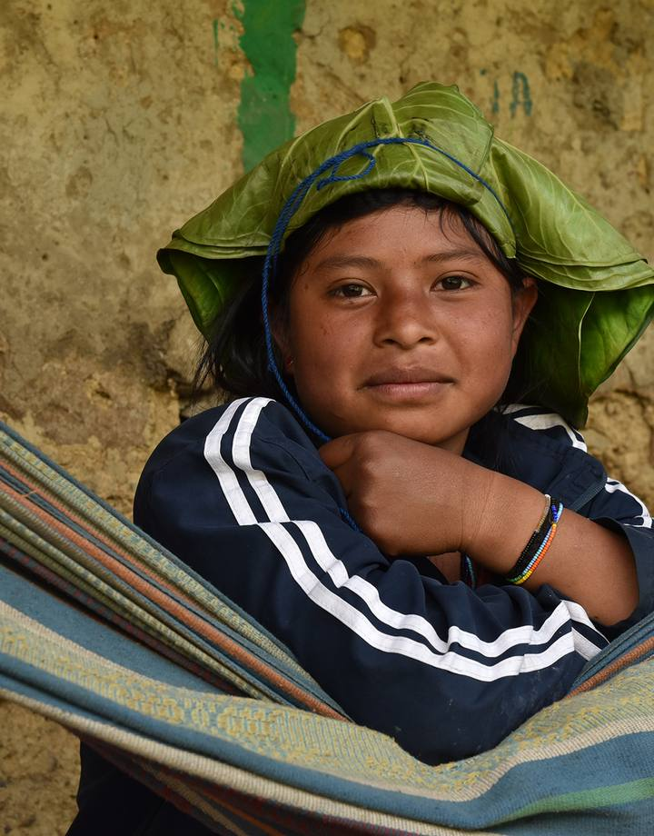
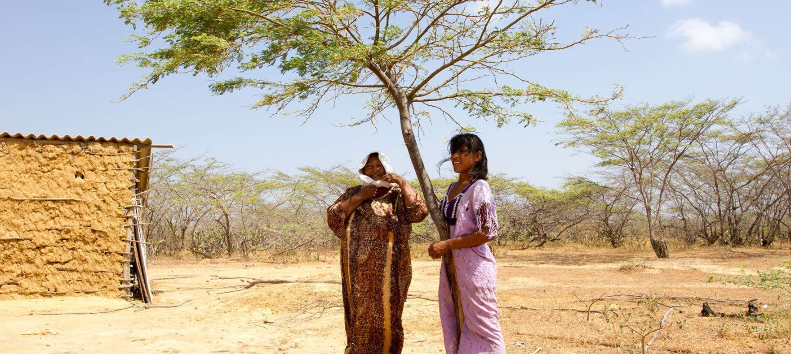
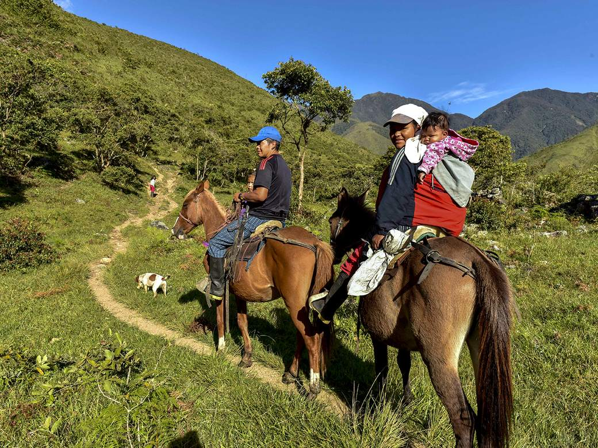
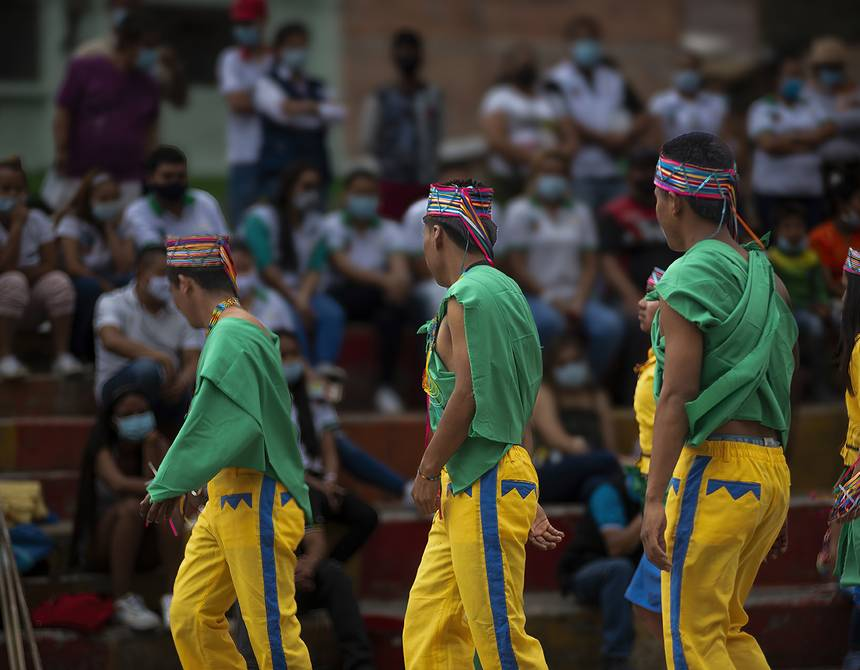
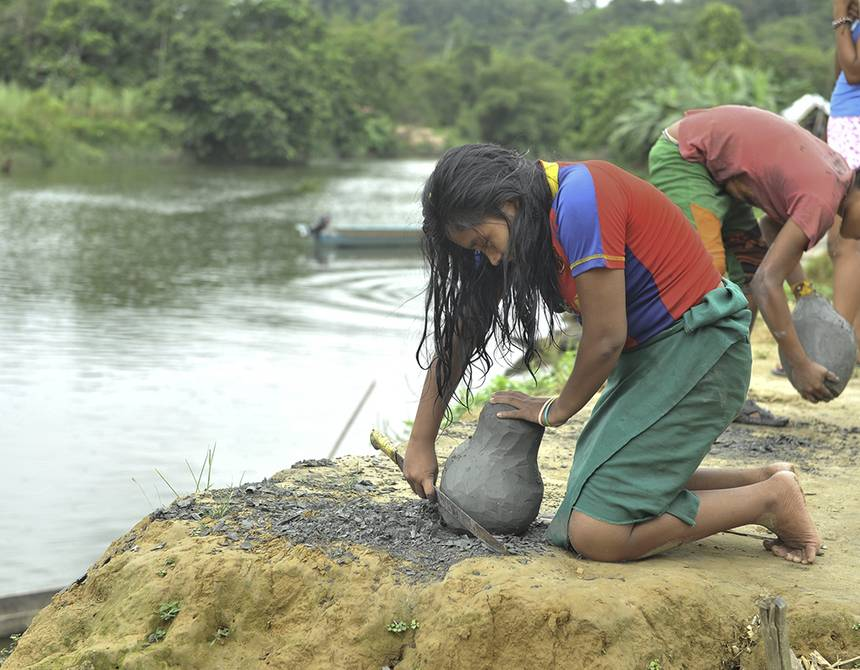

Registro en territorio
Las duplas de atención de la Defensoría documentan casos, solicitudes y situaciones de riesgo en las regiones con presencia de comunidades étnicas, siguiendo los protocolos de enfoque diferencial de la entidad.

Observatorio de la Defensoría del Pueblo sobre los derechos de los pueblos indígenas, negros, afrocolombianos, raizales, palenqueros y Rrom.

TRENZAS hace seguimiento a la situación de derechos humanos de los pueblos y comunidades étnicas de Colombia, y reúne en un solo lugar información que hoy está dispersa.
El Observatorio articula los registros de las duplas de atención de la Defensoría en territorio con alertas tempranas, resoluciones defensoriales, decisiones judiciales y los informes que producen las organizaciones propias de los pueblos. Ese material se organiza por eje temático y por territorio para que pueda consultarse sin conocimiento técnico previo.
El propósito no se agota en documentar. La información existe para quedar en manos de quienes la necesitan al momento de exigir garantías.
La trenza guarda información. La tradición oral palenquera recoge que mujeres esclavizadas tejieron en su cabello rutas de huida hacia los palenques y escondieron semillas entre las hebras. El nombre toma esa idea: hebras separadas que, entrelazadas, sostienen y transmiten aquello que hace falta para seguir adelante.


Un derecho que nadie documenta es un derecho que cuesta el doble reclamar.
Ningún dato llega solo a la página. Pasa por tres momentos, y en cada uno cambia de manos.
Las duplas de atención de la Defensoría documentan casos, solicitudes y situaciones de riesgo en las regiones con presencia de comunidades étnicas, siguiendo los protocolos de enfoque diferencial de la entidad.
Esos registros se cruzan con censos oficiales, jurisprudencia de la Corte Constitucional, decisiones de organismos internacionales y reportes de organizaciones étnicas de base.
El equipo del Observatorio depura, categoriza y convierte el material en productos consultables, con la metodología y las fuentes declaradas en cada publicación.
Tres hebras del mismo tejido. Cada eje agrupa el seguimiento, el análisis y los productos del Observatorio sobre un ámbito específico de derechos.
El racismo estructural rara vez aparece como un hecho aislado. Se expresa en el acceso desigual a los servicios de salud, en la ausencia de intérpretes en los despachos judiciales, en el trato que reciben niñas y niños en las instituciones educativas y en los discursos que circulan por medios y redes sociales. Este eje sigue esas expresiones y documenta las barreras concretas que enfrentan las personas étnicas cuando intentan hacer valer sus derechos ante el Estado.
Las mujeres indígenas, negras, afrocolombianas, raizales, palenqueras y Rrom sostienen buena parte de la vida organizativa de sus comunidades, y aun así encuentran obstáculos persistentes para llegar a los espacios donde se decide. Este eje observa su presencia en cargos de elección popular, en las instancias de gobierno propio y en los escenarios de consulta previa, y registra las violencias que enfrentan cuando ejercen liderazgo.
El derecho a decidir sobre el territorio y a regirse por normas propias está reconocido en la Constitución, pero su ejercicio depende de condiciones que no siempre se cumplen. Este eje hace seguimiento a los procesos de consulta previa, al funcionamiento de la jurisdicción especial indígena, a la operación de los consejos comunitarios y a las tensiones entre el ordenamiento estatal y los sistemas de gobierno propio de cada pueblo.
La capa de profundización. Material para quien necesita ir más allá del panorama general: citar una fuente, preparar una acción o formarse en el tema.

Fichas por departamento y municipio con presencia de resguardos, consejos comunitarios y kumpañy, con la situación de derechos documentada en cada uno.
Abrir el mapaSeries gráficas sobre las tendencias que sigue el Observatorio, descargables y con licencia abierta para uso pedagógico y comunitario.
Ver la galería
Informes temáticos, documentos de trabajo y análisis de coyuntura del equipo del Observatorio.
Ver publicacionesSentencias, resoluciones defensoriales, autos de seguimiento y normativa aplicable, organizados por eje y por pueblo.
Buscar documentos
Rutas de atención, entidades competentes y observatorios aliados en Colombia y en la región.
Ver el directorio